内容要点
自由摄影在达芬奇调色页拆解三大色彩扭曲器：三角形色彩扭曲器擅长局部精准换色；六边形色相饱和度扭曲器擅长全景统调与风格塑形；双方形色度亮度扭曲器专注特定亮度区间的倾向与明暗精修。三者底层都映射色轮，但交互侧重点不同——按「手术刀 / 指挥家 / 精修师」分工选用，比死磕曲线更直观。
知识结构
进入达芬奇调色页点开蜘蛛网图标；确认 Color Warper；三角网格映射色轮，可扩成独立窗口。
吸管点衣服生成控制点：上下改色相、外增内减饱和；椭圆范围越大影响越广，适合大范围风格化。
点对点只改圆形选区内颜色；图钉锁定书本/皮肤等干扰色；下方可柔化范围并调主体明暗。
切色相饱和度扭曲器（六边形）；三角精局部、六边统全局；沿圆周改色相、径向改饱和。
此处图钉固定相应色相点防连带；扩展/收缩把相近色聚向目标色相；控制线可增至 8–24 条。
色度亮度扭曲器：左格黄↔蓝+明暗，右格绿↔红+明暗；配合右侧功能区。
吸管加绿提浓、亮部分层；暖色对冲偏绿；树干去黄；图钉后提亮暗树；整体微偏蓝再加黄对冲。
三角=手术刀、六边=指挥家、方形=精修师；与曲线原理相通，扭曲器更直观融合多维调整。
三大扭曲器不是三套玄学面板，而是同一色轮逻辑的三种交互：要局部换色用三角+点对点+图钉；要整体色倾向统一用六边+扩展收缩聚拢；要按明暗分层改倾向用双方形网格。按任务选工具，比在曲线里硬拧更快落地。
00:00-01:04入门：达芬奇色彩扭曲器与三角网格
开场立题学调色三大扭曲器。进入达芬奇调色页面，点击蜘蛛网状图标打开色彩扭曲器；左侧确认选中 Color Warper。界面是三角形网格，可点右侧扩展成可拖放的独立窗口。
三角网格本质是更精密地映射色轮：方位与色轮对应，网格内亮度纹理反映素材色彩关系。它把色相对色相、色相对饱和度、色相对亮度等多维调整融进一个交互面；鼠标移到画面上，网格中心会出现红色准星实时跟踪所指颜色。
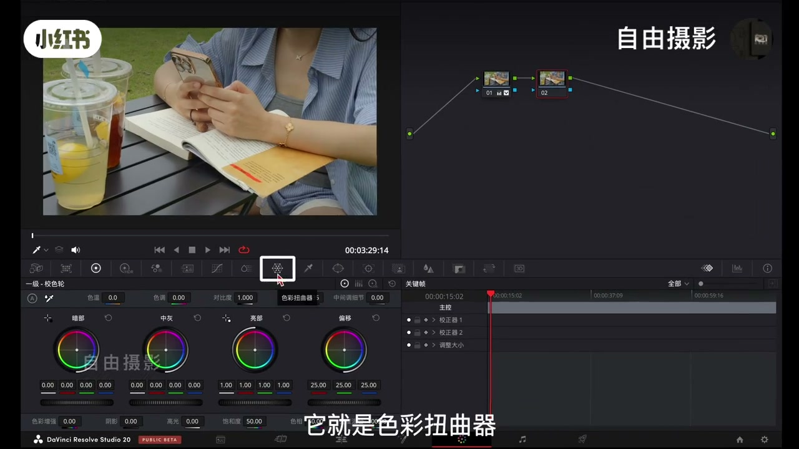
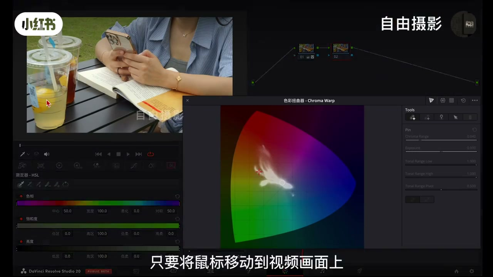
01:04-01:43普通模式：椭圆范围改色相与饱和度
示例：想改衣服颜色，用吸管点衣服，网格生成红色小圆圈控制点。以三角中心为基准，上下拖改色相，向外增饱和、向内减饱和。
默认普通模式调的是椭圆形色彩范围——拉得越大影响越广，适合大范围风格化处理；要更精细则切另一种模式。
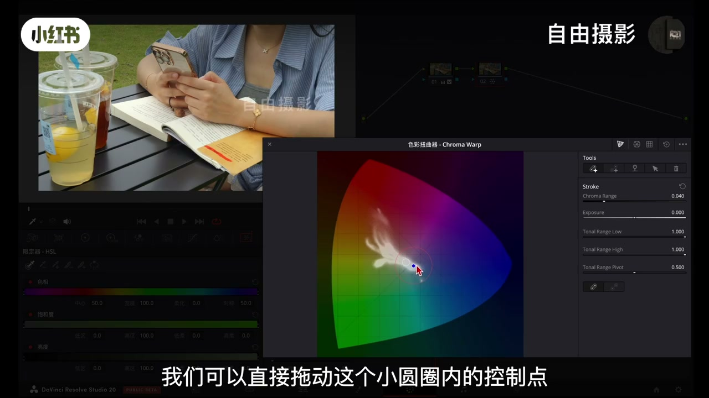
01:43-03:02点对点 + 图钉：指哪调哪并隔离干扰色
重置后切点对点模式：再吸衣服生成控制点，拖动时只有圆形选区内颜色被精确替换，选区外几乎不动，真正指哪调哪。
若波及书本或皮肤，用右侧图钉工具（大头针图标）点希望保护的颜色，即可钉住并恢复原状，可锁多个色。面板下方还可柔化控制点范围、调主体明暗。局部换色时建议图钉隔离干扰色，也可结合遮罩。
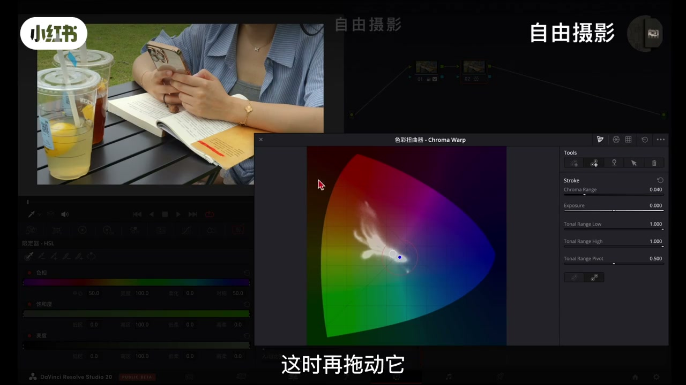
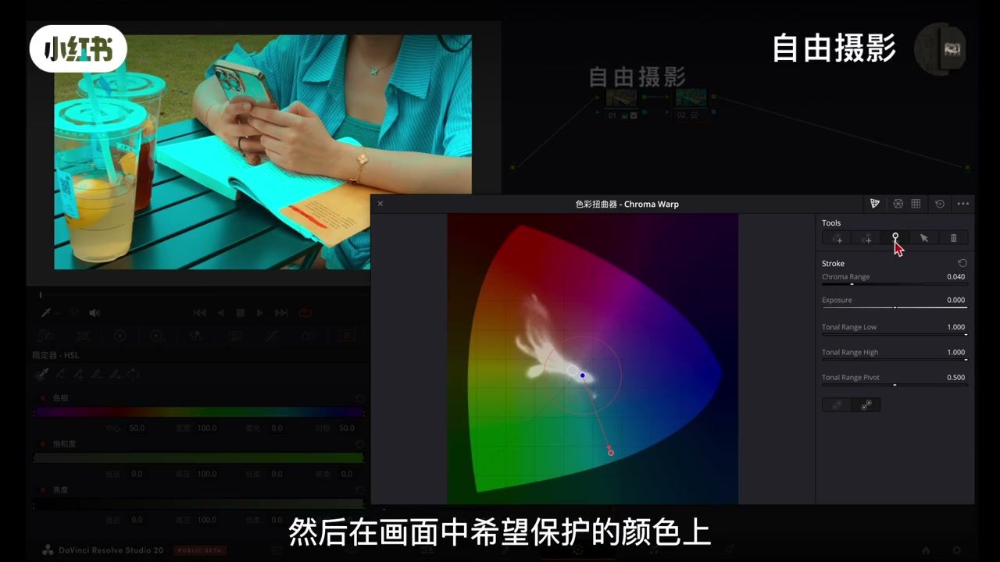
03:02-04:16六边形：色相饱和度扭曲器做全景统调
扭曲器不止局部修改。点右上角第二个图标切到色相饱和度扭曲器：六边形蜘蛛网网格，底层逻辑与三角扭曲器、传统色轮一脉相承，侧重点不同。
分工：三角精度高，擅衣物/产品等局部换色；六边效率高，擅全景关联调整、快速统一色调建风格。用法同样：吸管取色（如蓝衣服）→对应色相点变红 → 沿圆周改色相，向中心/外改该色相范围饱和度。
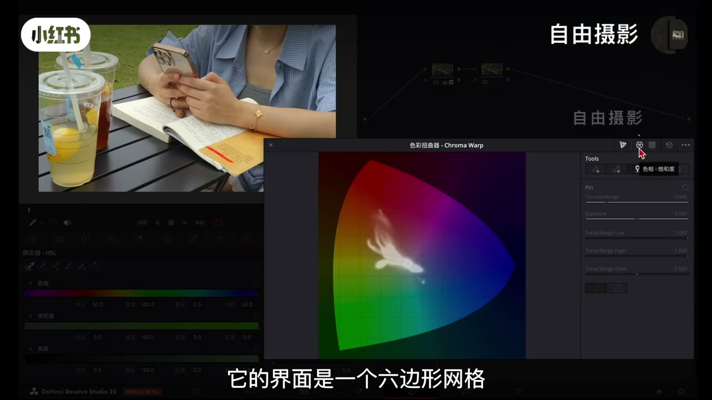
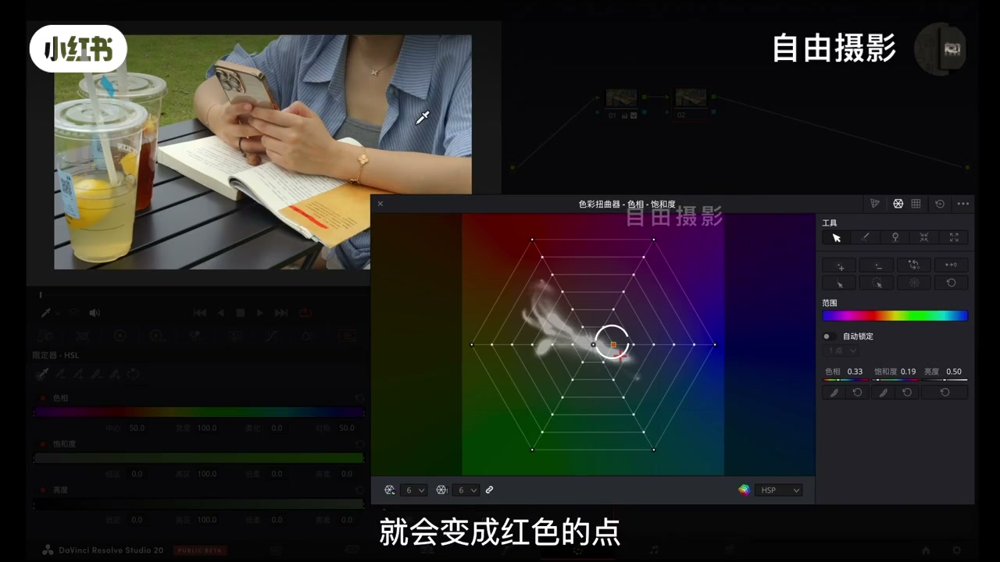
04:16-05:55图钉差异、扩展收缩与控制线加密
六边形里的图钉用途不同：主要固定相应色相点防连带影响，并不直接「恢复画面颜色」。例如固定了某区域黄色再拉边缘点，原先固定色仍可能被一定程度带动——因此更适合整体倾向统一与风格化，而非外科手术式局部。
右侧全局工具含柔化、反选、扩展/收缩选区等。扩展与收缩尤实用：电影画面忌过多不同层次色相显得杂乱；选工具后点目标色相（如橙红），周围相近色相点会向该点聚拢，快速统一和谐倾向。控制线默认 6 条，可增至 8、12、16 乃至 24 条做更细腻微调。
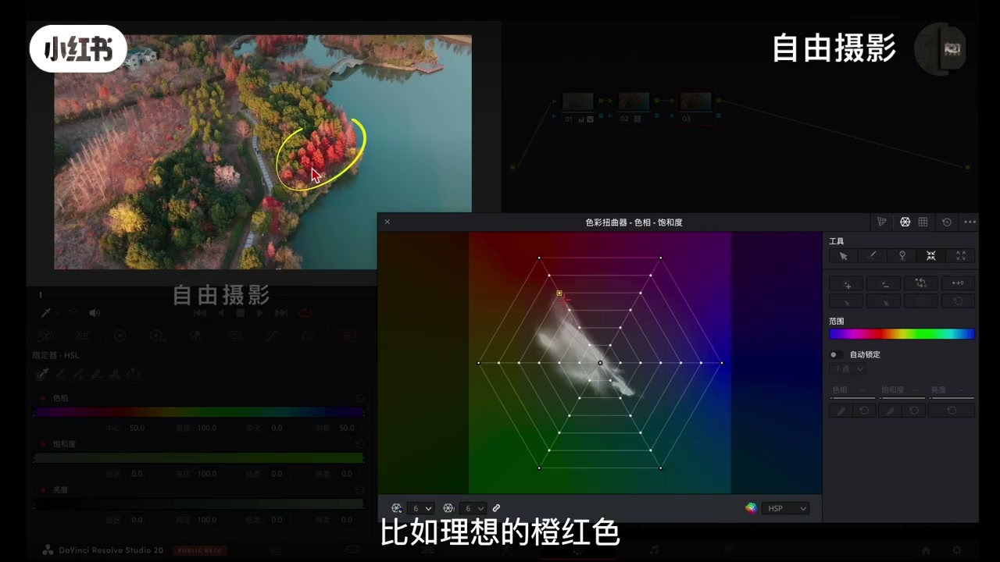
05:55-06:56双方形：色度亮度扭曲器的两套轴
第三种形态是色度亮度扭曲器：前两者分别擅局部改色与全局统调，它专注色彩明暗的精细调整，对特定亮度区间的颜色细腻控制。
右上角第三个图标切入后是两个并排方形网格，白色纹理对应画面色彩分布。第一格：横向黄↔蓝，纵向提亮/压暗；第二格：横向绿↔红，纵向同样控亮度。理解逻辑并配合右侧功能区即可驾驭。
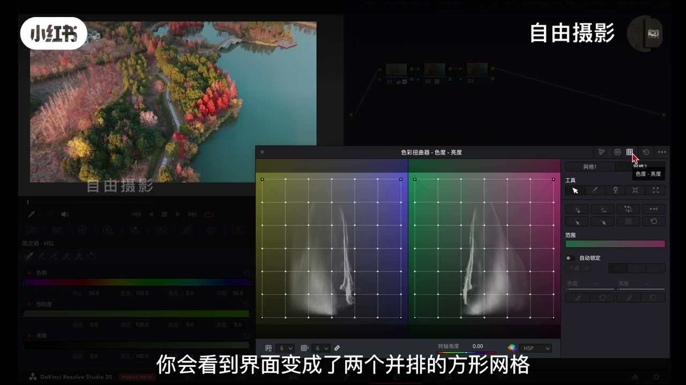
06:56-08:35湖面实操：分层加绿、对冲与图钉提亮
案例：湖面右上方偏淡、绿色不足——在偏绿区吸管取样，控制点往左（绿）拖，湖面更浓郁；层次丰富时可再在亮部加点，分层调不同明暗的绿色。若整体因此偏绿，选红杉等暖色控制点往右（红）拖做对冲。
左侧树干红不够纯、略泛黄，再加点往红微调。最深的绿树暗沉时，直接提亮可能误伤邻区：先图钉锁定周围色，再单独提亮暗部。最后在第一格整体微偏蓝减杂色，并适当加黄对冲，层次与明暗关系明显改善。
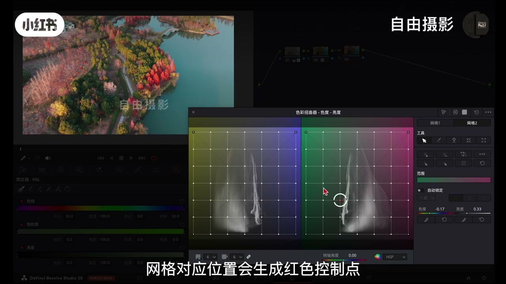
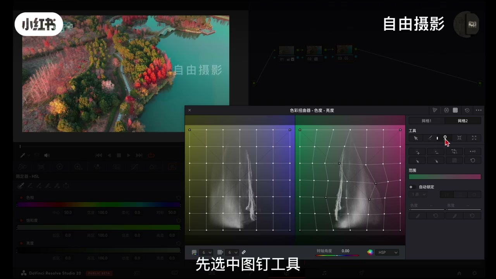
08:35-09:34收束：手术刀 / 指挥家 / 精修师
三大色彩扭曲器核心用法：三角=精准换色、指哪调哪的局部修正手术刀；六边=全局统调、高效塑风格的指挥家；方形=明暗精修、分层控制的质感精修师。
与曲线底层原理相通：曲线提供更细分维度，扭曲器把多项调整融为一体、操作更直观。按需求灵活选型，在保证效果同时提升效率。片尾：「我是自由摄影，我们下期再见。」
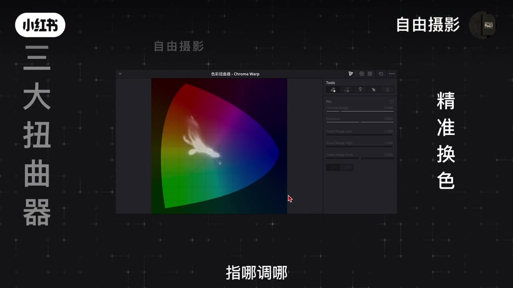
完整转录（87段）
以下文本由 Whisper medium 模型自动转录，可能存在少量识别误差，已尽可能修正。
今天我们学调色的三大扭曲器
首先我们进入达分级的调色页面 找到并点击那个蜘蛛网一样的图标
他就是色彩扭曲器 打开面板后 请确认左侧选中的是cronwork
这时你会看到一个三角形网格界面 如果觉得窗口太小 可以点击右侧扩展按钮 将它变成一个自由拖动
收放的独立窗口 操作视野会更开阔 这个工具的设计非常精妙 它的三角形网格布局本质上是以更精密的方式
映射了我们熟悉的色轮 颜色方位以色轮完全对应 同时网格内的亮度纹理也直观反映了画面素材的色彩关系
它的强大之处在于将摄像对摄像 摄像对饱和度 摄像对亮度等多维度调整 融合在一个直观的交互界面中 操作非常直观
只要将鼠标移动到视频画面上 三角形网格中心就会出现一个红色准星
实时跟踪你当前所指的颜色
举个例子 假如我想改变衣服的颜色 用吸管点击衣服 网格内就会自动生成一个对应的红色小圆圈
我们可以直接拖动这个小圆圈内的控制点 以这个三角中心为基准 上下拖动可以改变这个颜色的摄像
向外拖动 增加饱和度 向内则减少饱和度
不过要注意 在这个默认的普通模式下 你调整的是一个椭圆形的色彩范围
拉得越大 影响的颜色范围就越广 非常适合进行大范围的色彩分合化处理
当然 如果需要进行更精细的控制 我们可以切换到另一种模式
现在我们先点击面板上重置按钮 恢复到初始状态 来试试第二个功能 点对点模式
再次用吸管点击衣服生成控制点 这时再拖动它 效果就完全不同了
只有严格位移这个圆形选区内的颜色会被精确替换 选区外的颜色几乎不受影响 真正做到了指哪调哪
如果在调整过程中影响到了不想改变的区域 比如书本或皮肤
可以使用涂钉功能来锁定颜色 点击面板上右侧的涂钉攻击图标 形状像一个大头针
然后在画面中希望保护的颜色上 比如书本和皮肤点击一下
这个颜色就会立刻被盯住并恢复原状 你也可以根据需要锁定多个颜色
之后 无论你怎么调整目标颜色 它都会保持不变
此外 在面板下方 你还可以选中需要的控制点进行柔化范围 让选区更精准
色彩也过渡得更自然 避免出现生硬边缘 还可以选中主体区域提升或者降低明暗程度
直到达成满意的效果
这个工具在处理局部色彩更换时非常好用 调整时建议配合涂钉功能来隔离干扰色 也可以结合遮罩一起使用
不过 色彩扭曲器的能力远不止以局部修改 接下来我们就来看看它在塑造整体色调方面更为强大的另一种形态
摄像饱和度扭曲器
你可以点击右上角的第二个图标切换到它 它的界面是一个六边形的网格 形状类似传统蜘蛛网
虽然从三角形变成了六边形 但它的底层逻辑 以我们刚学的三角形扭曲器 乃至传统色轮都是一脉相承的
只是交互设计的侧重点有所不同
三角形扭曲器精度高 擅长处理画面中特定位置的颜色 如衣物
产品或具体物体的色彩替换 六边形扭曲器 效率高 擅长全景性
关联性的色彩调整 能快速统一画面色调 建立整体色彩风格
使用起来 同样直观 用吸管在画面中吸取你想调整的颜色
例如一件蓝色衣服 六边形网格上对应摄像的点就会变成红色的点
以中心点为基准 沿着圆周拖动 改变这个颜色的摄像 向中心或向外拖动 降低或提高这个摄像范围的饱和度
需要注意的是这里的图定工具用途与之前不同
它主要用以固定相迎色摄像点 防止他们被连带影响 而不是直接恢复画面颜色 举个例子
如果我固定了疏分面的黄色 再去拉动边缘的某点
原先固定的颜色还是会受到一定程度的影响
因此 这个工具更适合用以整体色彩的倾向型统一以分隔化调整
在他的右侧 还提供了一系列强大的全局控制工具 比如柔化 反选
或展收缩选期等 帮助你实现更精细的影响范围控制
其中或长以收缩工具特别有意思 也极其实用性
大家知道在电影画面里 色彩往往具有高度的一致性和统一性 如果画面中出现太多不同层次
不同摄像的色彩容易显得杂乱合张 以往想要统一这些相近色彩的摄像倾向是非常复杂的事情
而现在你可以利用这个工具轻松实现选中它 然后在画面中选择一个目标摄点
比如你想的橙红色 你会发现周围相近摄像的点都会朝这个点聚笼
这能让你快速将画面中分散的相近色彩 统一到一个和谐的目标摄像上 对营造高级
统一的整体画面的色彩倾向特别有帮助 最后 如果你觉得默认的六个控制线不够用
需要更精细的调整色彩 还可以在面板左下方将控制线数量六条增加到八条
12条16条乃至24条 从而实现对色彩更细腻 更极致的微调
看完了整体调色的六边形工具 我们再来认识一下第三种形态
色度亮度扭曲器 如果说前两者分别擅长局部改色和全集统一
那么它就是专注于色彩的明暗 精细调整 能对特度亮度期间的颜色进行细腻控制
在面板右上角的第三个图标可以切换到这个工具 你会看到界面变成了两个并排的方形网格
两个网格上的白色纹理信息分别对应画面中色彩的分布情况
第一个网格横向代表色彩倾向 向左调整偏黄 向右调整偏蓝
纵向代表明暗变化 向上提亮 向下为暗 第二个网格同样横向控制色彩
向左偏绿 向右偏红 纵向同样控制亮度变化 很多同学初次接触这个工具可能会觉得有些复杂
其实只要理解它的调整逻辑 再配合它右侧的功能区就能轻松驾驭 为了让大家更直观的掌握使用方法
我们来看一个时超案例
在这个画面中 湖面右上方的色彩偏淡 绿色不足 我们可以在对应的全绿色区域用吸管吸起颜色
网格对应位置会生成红色控制点 将它向左绿色方向拖动 即可让湖面显得更浓郁
如果湖面的色彩层次丰富 单一控制点不够 我们还可以在亮部区域添加另一个控制点
分层调整不同明暗区域的绿色表现 调整后 湖面色彩虽然得到改善 但画面整体可能因此偏绿
这时我们可以选中画面中的暖色调区域 比如红杉树的控制点 向右红色方向拖动 通过色彩对冲
恢复整体平衡 还有在画面中 左侧速干红色不够纯净 略带泛黄
也可以再添加控制点 继续往红色方向微调 让色彩更干净
此时如果发现画面中最深的绿色树木显得暗沉
直接提亮对应控制点 可能会影响到其他区域 这时可以使用右侧涂钉工具
先选中涂钉工具 将周围的色彩锁定 再切换回调整工具 单独提亮暗部区域 画面立刻就会显得更加通透
最后我们可以在第一个网格中将整体色彩轻微向蓝色方向调整
减少杂色感 同时适当加入黄色作为对冲 让色调更自然
经过这几步的调整 画面的色彩层次以明暗关系就得到了明显改善
这个工具无论是改变颜色倾向还是调整明暗亮度都能做到精准控制 让调整过程既高效又直观
恭喜你 你已经掌握了三大色彩扭击器的核心用法
三角形 精准换色 指哪条哪是极不修正的手术刀
六边形 拳击统调 高效竖设是分格塑造的指挥家 方形
明暗精修 分层控制是自敢打造的精修师 无论是色彩扭曲器还是之前学习的曲线工具
它的底层原理都是相通的 曲线提供了更细分纬度的控制 而扭曲器则将多项调整融合到一体
操作更加直观 在实际操作中 你可以根据具体需求灵活选择合适的工具
在确保效果的同时 进一步提升调色效率和操作体验
希望通过今天的讲解 能帮助你更好的应用色彩扭曲器 在实际创作中实现更精准高效的调色效果
我是自由摄影 我们下期再见 同学们 拜拜